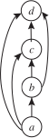

Consider the functions from \(S=\{-2,-1,0,1,2\}\) to \(T=\{1,2,3,4,5\}\) defined by \(f(x) = x+3\text{,}\) and \(g(x) = x^5-5x^3+5x +3\text{.}\) Write down the set of ordered pairs \((x,f(x))\) for \(x \in S\) and the set of ordered pairs \((x,g(x))\) for \(x \in S\text{.}\) Are the two functions the same or different?
Problem 328 points out how two functions which appear to be different are actually the same on some domain of interest to us. Most of the time when we are thinking about functions it is fine to think of a function casually as a relationship between two sets. In Problem 328 the set of ordered pairs you wrote down for each function is called the relation of the function. When we want to distinguish between the casual and the careful in talking about relationships, our casual term will be “relationship” and our careful term will be “relation.” So relation is a technical word in mathematics, and as such it has a technical definition. A relation from a set \(S\) to a set \(T\) is a set of ordered pairs whose first elements are in \(S\) and whose second elements are in \(T\text{.}\) Another way to say this is that a relation from \(S\) to \(T\) is a subset of \(S\times T\text{.}\)
A typical way to define a function \(f\) from a set \(S\text{,}\) called the domain of the function, to a set \(T\text{,}\) called the range, is that \(f\) is a relationship between \(S\) to \(T\) that relates one and only one member of \(T\) to each element of \(X\text{.}\) We use \(f(x)\) to stand for the element of \(T\) that is related to the element \(x\) of \(S\text{.}\) If we wanted to make our definition more precise, we could substitute the word “relation” for the word “relationship” and we would have a more precise definition. For our purposes, you can choose whichever definition you prefer. However, in any case, there is a relation associated with each function. As we said above, the relation of a function \(f:
S\rightarrow T\) (which is the standard shorthand for “\(f\) is a function from \(S\) to \(T\)” and is usually read as \(f\) maps \(S\) to \(T\)) is the set of all ordered pairs \((x,f(x))\) such that \(x\) is in \(S\text{.}\)
Problem329
Here are some questions that will help you get used to the formal idea of a relation and the related formal idea of a function. \(S\) will stand for a set of size \(s\) and \(T\) will stand for a set of size \(t\text{.}\)
(a)
What is the size of the largest relation from \(S\) to \(T\text{?}\)
(b)
What is the size of the smallest relation from \(S\) to \(T\text{?}\)
(c)
The relation of a function \(f:S\rightarrow T\) is the set of all ordered pairs \((x,f(x))\) with \(x\in S\text{.}\) What is the size of the relation of a function from \(S\) to \(T\text{?}\) That is, how many ordered pairs are in the relation of a function from \(S\) to \(T\text{?}\)
In the relation of a function, how many pairs \((x, f (x))\) have the same \(x\)-value?
(d)
We say \(f\) is a one-to-one function or injection from \(S\) to \(T\) if each member of \(S\) is related to a different element of \(T\text{.}\) How many different elements must appear as second elements of the ordered pairs in the relation of a one-to-one function (injection) from \(S\) to \(T\text{?}\)
(e)
A function \(f:S\rightarrow T\) is called an onto function or surjection if each element of \(T\) is \(f(x)\) for some \(x\in S\) What is the minimum size that \(S\) can have if there is a surjection from \(S\) to \(T\text{?}\)
Problem330
When \(f\) is a function from \(S\) to \(T\text{,}\) the sets \(S\) and \(T\) play a big role in determining whether a function is one-to-one or onto (as defined in Problem 329). For the remainder of this problem, let \(S\) and \(T\) stand for the set of nonnegative real numbers.
(a)
If \(f:S\rightarrow T\) is given by \(f(x) =x^2\text{,}\) is \(f\) one-to-one? Is \(f\) onto?
(b)
Now assume \(S'\) is the set of all real numbers and \(g:S'\rightarrow T\) is given by \(g(x) = x^2\text{.}\) Is \(g\) one-to-one? Is \(g\) onto?
(c)
Assume that \(T'\) is the set of all real numbers and \(h:S\rightarrow T'\) is given by \(h(x) = x^2\text{.}\) Is \(h\) one-to-one? Is \(h\) onto?
(d)
And if the function \(j:S'\rightarrow T'\) is given by \(j(x)=x^2\text{,}\) is \(j\) one-to-one? Is \(j\) onto?
Problem331
If \(f:S\rightarrow T\) is a function, we say that \(f\) maps \(x\) to \(y\) as another way to say that \(f(x)=y\text{.}\) Suppose \(S=T=\{1,2,3\}\text{.}\) Give a function from \(S\) to \(T\) that is not onto. Notice that two different members of \(S\) have mapped to the same element of \(T\text{.}\) Thus when we say that \(f\) associates one and only one element of \(T\) to each element of \(S\text{,}\) it is quite possible that the one and only one element \(f(1)\) that \(f\) maps 1 to is exactly the same as the one and only one element \(f(2)\) that \(f\) maps 2 to.
We visualize numerical functions like \(f(x)=x^2\) with their graphs in Cartesian coordinate systems. We will call these kinds of graphs coordinate graphs to distinguish them from other kinds of graphs used to visualize relations that are non-numerical.
FigureA.1.1The alphabet digraph.
In Figure A.1.1 we illustrate another kind of graph, a “directed graph” or “digraph” of the ``comes before in alphabetical order" relation on the letters \(a\text{,}\) \(b\text{,}\) \(c\text{,}\) and \(d\text{.}\) To draw a directed graph of a relation on a set \(S\text{,}\) we draw a circle (or dot, if we prefer), which we call a vertex, for each element of the set, we usually label the vertex with the set element it corresponds to, and we draw an arrow from the vertex for \(a\) to that for \(b\) if \(a\) is related to \(b\text{,}\) that is, if the ordered pair \((a,b)\) is in our relation. We call such an arrow an edge or a directed edge. We draw the arrow from \(a\) to \(b\text{,}\) for example, because \(a\) comes before \(b\) in alphabetical order. We try to choose the locations where we draw our vertices so that the arrows capture what we are trying to illustrate as well as possible. Sometimes this entails redrawing our directed graph several times until we think the arrows capture the relationship well.
We also draw digraphs for relations from a set \(S\) to a set \(T\text{;}\) we simply draw vertices for the elements of \(S\) (usually in a row) and vertices for the elements of \(T\) (usually in a parallel row) draw an arrow from \(x\) in \(S\) to \(y\) in \(T\) if \(x\) is related to \(y\text{.}\) Notice that instead of referring to the vertex representing \(x\text{,}\) we simply referred to \(x\text{.}\) This is a common shorthand. Here are some exercises just to practice drawing digraphs.
Problem332
Draw the digraph of the “is a proper subset of” relation on the set of subsets of a two element set. How many arrows would you have had to draw if this problem asked you to draw the digraph for the subsets of a three-element set?
For the second question, how many arrows have to leave the empty set? How many arrows have to leave a set of size one?
We also draw digraphs for relations from finite set \(S\) to a finite set \(T\text{;}\) we simply draw vertices for the elements of \(S\) (usually in a row) and vertices for the elements of \(T\) (usually in a parallel row) and draw an arrow from \(x\) in \(S\) to \(y\) in \(T\) if \(x\) is related to \(y\text{.}\) Notice that instead of referring to the vertex representing \(x\text{,}\) we simply referred to \(x\text{.}\) This is a common shorthand.
Problem333
Draw the digraph of the relation from the set \{A, M, P, S\} to the set \{Sam, Mary, Pat, Ann, Polly, Sarah\} given by “is the first letter of.”
Problem334
Draw the digraph of the relation from the set \{Sam, Mary, Pat, Ann, Polly, Sarah\} to the set \{A, M, P, S\} given by “has as its first letter.”
Problem335
Draw the digraph of the relation on the set \{Sam, Mary, Pat, Ann, Polly, Sarah\} given by “has the same first letter as.”
When we draw the digraph of a function \(f\text{,}\) we draw an arrow from the vertex representing \(x\) to the vertex representing \(f(x)\text{.}\) One of the relations you considered in Problems 333 and Problem 334 is the relation of a function.
(a)
Which relation is the relation of a function?
(b)
How does the digraph help you visualize that one relation is a function and the other is not?
Problem337
Digraphs of functions help us to visualize whether or not they are onto or one-to-one. For example, let both \(S\) and \(T\) be the set \(\{-2, -1, 0 ,1, 2\}\) and let \(S'\) and \(T'\) be the set \(\{0,1,2\}\text{.}\) Let \(f(x) = 2-|x|\text{.}\)
(a)
Draw the digraph of the function \(f\) assuming its domain is \(S\) and its range is \(T\text{.}\) Use the digraph to explain why or why not this function maps \(S\) onto \(T\text{.}\)
(b)
Use the digraph of the previous part to explain whether or not the function is one-to one.
(c)
Draw the digraph of the function \(f\) assuming its domain is \(S\) and its range is \(T'\text{.}\) Use the digraph to explain whether or not the function is onto.
(d)
Use the digraph of the previous part to explain whether or not the function is one-to-one.
(e)
Draw the digraph of the function \(f\) assuming its domain is \(S'\) and its range is \(T'\text{.}\) Use the digraph to explain whether the function is onto.
(f)
Use the digraph of the previous part to explain whether the function is one-to-one.
(g)
Suppose the function \(f\) has domain \(S'\) and range \(T\text{.}\) Draw the digraph of \(f\) and use it to explain whether \(f\) is onto.
(h)
Use the digraph of the previous part to explain whether \(f\) is one-to-one.
A one-to-one function from a set \(X\) onto a set \(Y\) is frequently called a bijection, especially in combinatorics. Your work in Problem 337 should show you that a digraph is the digraph of a bijection from \(X\) to \(Y\)
if the vertices of the digraph represent the elements of \(X\) and \(Y\text{,}\)
if each vertex representing an element of \(X\) has one and only one arrow leaving it, and
each vertex representing an element of \(Y\) has one and only one arrow entering it.
Problem338
If we reverse all the arrows in the digraph of a bijection \(f\text{,}\) we get the digraph of another function \(g\text{.}\) Is \(g\) a bijection? What is \(f(g(x))\text{?}\) What is \(g(f(x))\text{?}\)
If \(f\) is a function from \(S\) to \(T\text{,}\) if \(g\) is a function from \(T\) to \(S\text{,}\) and if \(f(g(x))= x\) for each \(x\) in \(T\) and \(g(f(x)) = x\) for each \(x\) in \(S\text{,}\) then we say that \(g\) is an inverse of \(f\) (and \(f\) is an inverse of \(g\)).
More generally, if \(f\) is a function from a set \(R\) to a set \(S\text{,}\) and \(g\) is a function from \(S\) to \(T\text{,}\) then we define a new function \(f \circ g\text{,}\) called the composition of \(f\) and \(g\) , by \(f\circ g(x) = f(g(x))\text{.}\) Composition of functions is a particularly important operatio in subjects such as calculus, where we represent a function like \(h(x) = \sqrt{x^2 + 1}\) as the composition of the square root function and the square and add one function in order to use the chain rule to take the derivative of \(h\text{.}\)
The function \(\iota\) (the Greek letter iota is pronounced eye-oh-ta) from a set \(S\) to itself, given by the rule \(\iota(x) = x\) for every \(x\) in \(S\text{,}\) is called the identity function on S. If \(f\) is a function from \(S\) to \(T\) and \(g\) is a function from \(T\) to \(S\) such that \(g(f(x)) = x\) for every \(x\) in \(S\text{,}\) we can express this by saying that \(g\circ f = \iota\text{,}\) where \(\iota\) is the identity function of \(S\text{.}\) Saying that \(f(g(x)) = x\) is the same as saying that \(f\circ g = \iota\text{,}\) where \(\iota\) stands for the identity function on \(T\text{.}\) We use the same letter for the identity function on two different sets when we can use context to tell us on which set the identity function is being defined.
Problem339
If \(f\) is a function from \(S\) to \(T\) and \(g\) is a function from \(T\) to \(S\) such that \(g(f(x)) = x\text{,}\) how can we tell from context that \(g\circ f\) is the identity function on \(S\) and not the identity function on \(T\text{?}\)
Explain why a function that has an inverse must be a bijection.
Problem341
Is it true that the inverse of a bijection is a bijection?
Problem342
If \(g\) and \(h\) are inverse of \(f\text{,}\) then what can we say about \(g\) and \(h\text{?}\)
Problem343
Explain why a bijection must have an inverse.
Since a function with an inverse has exactly one inverse \(g\text{,}\) we call \(g\) the inverse of \(f\text{.}\) From now on, when \(f\) has an inverse, we shall denote its inverse by \(f^{-1}\text{.}\) Thus \(f(f^{-1}(x)) = x\) and \(f^{-1}(f(x)) = x\text{.}\) Equivalenetly \(f\circ f^{-1} = \iota\) and \(f^{-1} \circ f = \iota\text{.}\)